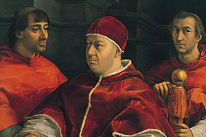
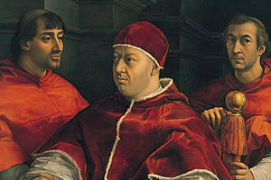

|
| Home The City Local Facts Travel Blogs Photo Gallery |
  
|
The MediciIn the 15th century, Florence was among the largest cities in Europe, considered rich and economically successful. Life was not idyllic for all residents though, among whom there were great disparities in wealth. Cosimo de' Medici was the first Medici family member to essentially control the city from behind the scenes. Although the city was technically a democracy of sorts, his power came from a vast patronage network along with his alliance to the new immigrants, the gente nuova (new people). The fact that the Medici were bankers to the pope also contributed to their ascendancy. Cosimo was succeeded by his son Piero, who was, soon after, succeeded by Cosimo's grandson, Lorenzo in 1469. Lorenzo was a great patron of the arts, commissioning works by Michelangelo, Leonardo da Vinci and Botticelli. Lorenzo was an accomplished musician and brought composers and singers to Florence, including Alexander Agricola, Johannes Ghiselin, and Heinrich Isaac. By contemporary Florentines (and since), he was known as "Lorenzo the Magnificent" (Lorenzo il Magnifico). Following the death of Lorenzo de' Medici in 1492, he was succeeded by his son Piero II. When the French king Charles VIIIinvaded northern Italy, Piero II chose to resist his army. But when he realized the size of the French army at the gates of Pisa, he had to accept the humiliating conditions of the French king. These made the Florentines rebel and they expelled Piero II. With his exile in 1494, the first period of Medici rule ended with the restoration of a republican government.
|
Reference Links |